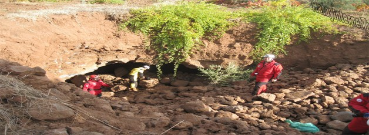
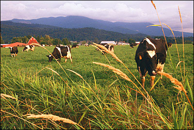

Hassa ilçesinin kurulu olduğu bölge M.Ö. 3000 yıllarından beri yerleşim alanı olarak kullanılmaktadır. Bölgede Akadlar, Babilliler, Asurlular, Hititler, İskitler, Persler, Selevkouslar, Kilikya Krallığı, Romalılar, Emeviler, Abbasiler, Tolunoğlulları, İhşitler, Selçuklular, Eyyubiler, Memlüklüler egemenlik sürmüşlerdir. l516 Mercidabık Zaferi ile Osmanlıların yönetimine geçmiştir. Hassa İlçesi 1864-1865 yıllarında Amanos Dağlarında yaşamakta olan 'ULAŞLI' boyunun isyanı üzerine bölgeye gönderilen Osmanlı Fırka-ı İslahiye birlikleri komutanı olan İbrahim Derviş Paşa'nın isyanı bastırarak (Seyyar Jandarma bölüğünün eskiden bulunduğu, mevcut belediye şehir parkının bulunduğu yerde) bölgede konaklaması ile kurulmuştur. Ordu-Köyü namı ile bir karye olarak teşkil olunan Hassa'ya civar nahiyeler olan Hacılar, Tiyek ve Akbez'den haneler getirilerek yerleştirilir ve Maraş Mutasarrıflığına bağlanır. İlçemiz Birinci Dünya Savaşı sırasında 1918 yılında Fransızlarca ilk kez işgal edilir. Çetelerin şiddetli mukavemeti sonucunda çekilmek zorunda kalan Fransızlar 10 Kasım 1920'de ikinci kez, 09-10 Mart 1921'de üçüncü kez, ve 15 Mart 1921'de son kez işgale uğrar. 20 Ekim 1921 Ankara İtilaf namesi ile 5 Ocak 1922 tarihinde Fransız birliklerince boşaltılır. Bu karışık dönemde Türk Çeteleri Hassa'ya girerek, Kasım 1921'de hükümet binasına Osmanlı Sancağı çekmişler, sınırı ve kurtuluşu fiili hale getirmişlerdir. Halk arasında bu tarih 15 Kasım olarak bilinmekte ve bu tarih kurtuluş bayramı olarak kutlanmaktadır.Hassa İlçesi Hatay'ın Türkiye'ye katılışına kadar Gaziantep ili, İslahiye İlçesine bağlı bir bucak iken, Hatay'ın ilhakı ile (1939) ilçe konumuna erişmiştir. İlçemiz 39 mahalleden oluşmaktadır.
Hassa ilçesinin yüzölçümü 520 km2'dir. Hatay ilinin kuzeyinde Hatay’a 80 km uzaklıkta, Amanos Dağlarının eteğinde kurulmuştur. Suriye ile 24 km sınırı bulunmaktadır. Hassa ilçesi, coğrafi konum ve yüzölçümü bakımından Hatay'ın 3.büyük ilçesidir. İlçe merkezi Yeni Mahalle, Çay Mahallesi, 15 Kasım Mahallesi, Tepebaşı Mahallesi, Dervişpaşa Mahallesi ve Girne Mahallesi olmak üzere 6 mahalleden oluşmaktadır. İlçe, 39 belde ve köyleri içeren mahalleden oluşmaktadır. İlçe merkezinin içme suyu ihtiyacı Ödek, Pınarbaşı, Uyuzpınarı ve İncesu kaynak sularından sağlanmaktadır. Ayrıca Çardak Yaylasından getirilen ve sadece içme suyu olarak kullanılan su, ilçenin belirli yerlerinde halkın ihtiyacını karşılamaktadır.

Yıl
Toplam
Şehir
Kır
1965
21.596
2.761
18.835
1970
25.532
5.718
19.814
1975
38.839
10.926
27.913
1980
37.948
6.317
31.631
1985
45.541
8.254
37.287
1990
47.131
7.714
39.417
2000
49.994
9.071
40.923
2007
54.020
9.117
44.903
2008
54.630
9.301
45.329
2009
54.274
9.207
45.067
2010
54.287
9.218
45.069
2011
54.261
9.467
44.794
2012
54.104
9.758
44.346
2013
54.231
54.231
2014
54.146
54.146
İlçede 2014 – 2015 Eğitim Öğretim Yılında, 4 Anaokulu, 44 İlkokul, 22 Ortaokul, 2 Meslek Lisesi, 2 Anadolu Lisesi ve 1 İmam Hatip Lisesi olmak üzere toplam 75 okul bulunmaktadır.

Hassa ilçesinin ekonomisinde tarım ve hayvancılık önemli geçim kaynağını oluşturmaktadır. Tarımsal üretimde yaş sebze ve meyve (üzüm, nar vb) önemli yer tutmaktadır. Hayvancılık faaliyetleri olarak koyun ve keçi yetiştiriciliği ön planladır. İlçede kamu iktisadi kuruluşlarına ait Çukobirlik, Tarım Kredi Kooperatifi, Toprak Mahsulleri Ofisi bulunmaktadır.Ayrıca ilçede 2 adet çırçır ve prese fabrikası,1 Adet mısır kurutma tesisi, 1 Adet zeytinyağı fabrikası,5 Adet plastik doğrama atölyesi,2 Adet briket,parke ve beton direk atölyesi bulunmaktadır